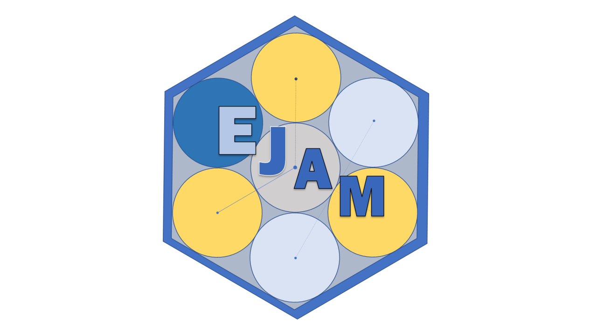

Using EJAM R functions in a browser via GitHub Codespaces
Source:vignettes/dev-codespaces.Rmd
dev-codespaces.RmdWhat this is
This article explains a way to use EJAM in R even if you do not have access to R on your own computer. Codespaces provide a way to use EJAM functions in R when a) you do not want to install R, or b) you temporarily only have access to a web browser. Using EJAM in R is useful in a few scenarios:
-
Running EJAM functions in RStudio gives
you access to analysis features not available in the web app, such as
ejamit_compare_distances(). - Running your own private copy of the EJAM web app using
ejamapp(isPublic = FALSE)lets you access the advanced tab and more options than are in the public hosted app. - It also lets you test an app feature you have drafted but not yet deployed.
A GitHub codespace is a private Linux computer in the cloud that you
use through a web browser. The EJAM repository has a setup folder,
.devcontainer, that makes a new codespace arrive with R,
RStudio and the EJAM package already installed. For how codespaces work
in general, see GitHub’s
documentation on Codespaces.
Caveats
- This is experimental and unsupported. It has had only limited testing, nothing checks it automatically, and it may stop working when R, RStudio or EJAM’s dependencies change. It is not a replacement for the public web app or for installing the package (see Installing the EJAM R package).
-
Some things do not work in a codespace. Some
functions that open a file or folder for you, such as plain
ejam2report(out), make the file but cannot display it. See “Limits”. - Your browser may silently block the new tabs. RStudio and the EJAM web app each open in a new browser tab. A pop-up blocker can stop that with no message at all, or with a question that is hidden behind another window, so it looks as if nothing happened. See Step 2 for what to do.
- The first start is slow. Setup takes about 15 minutes, and the page shows only “Setting up remote connection” during that time. Later starts of the same codespace take about a minute.
- You choose how much memory the machine has, and it must be enough for your analysis. The 2-core machine (8 GB) is enough to try EJAM functions on a small number of sites, but memory fills up over a long session or while running the web app. Choose the 4-core machine (16 GB) or larger to analyze thousands of sites or to use the app for more than a quick look. With too little memory, R is interrupted in the middle of an analysis (see “Limits”).
- A codespace stops by itself when it is not being used. See “If the codespace stops”.
What you need
- A free GitHub account. You do not need to be a member of the project.
- A web browser. A laptop or desktop is easiest. A tablet works, with the differences noted below.
Light use normally costs nothing. GitHub normally counts the time against the account of the person who creates the codespace, and gives each personal account a free monthly allowance. See “What it costs” below, including the case where an organization pays instead.
Which version of EJAM you get
A codespace installs EJAM from the branch it was created from. You choose the branch when you create the codespace, and nothing in the setup changes it afterwards.
- The link in Step 1 creates the codespace from the
developmentbranch, so you get the development version. This is the intended use. - The setup works only on a branch that contains the
.devcontainerfolder. For now that isdevelopment. The repository’s default branch,main, holds the latest release and does not have the folder yet, so a codespace made with the green Code button on the repository’s main page is a plain one, with no R, RStudio or EJAM. - On the page where you confirm the new codespace, the Branch box shows which branch will be used, and you can change it there.
The large datasets are the data release that the chosen branch asks for.
Step 1: Start a codespace
- Sign in to GitHub.
- Open this link: create a codespace on the development branch of EJAM.
- Check that Branch says
development. - Leave Machine type on 2-core to try things out. Choose 4-core (16 GB of memory) to analyze thousands of sites or to spend much time in the web app.
- Click Create codespace.
- Wait, and leave the tab open. The page says “Setting up remote connection” for the whole setup, about 15 minutes, because EJAM is installed and about 1 GB of data is downloaded before anything else appears. Then an editor called VS Code opens in the tab.
- If a grey bar at the top says Restricted Mode, click Manage and then Trust. RStudio does not start until you do. The folder is the EJAM repository itself.
Step 2: Open RStudio
- In the bottom panel of VS Code, click the Ports tab (next to Terminal).
- Find the row named RStudio (8787). If the row shows only the number 8787, RStudio is still starting, so wait until its name appears.
- Click the globe icon in that row, just right of the web address. RStudio opens in a new browser tab with no password to enter.
The first try often fails. If the new tab stays on
“getting your codespace ready”, or shows a localhost
address and an error saying the browser could not connect to the server,
close that tab and click the globe icon again. The second try usually
works.
Your browser may block a new tab without telling you. RStudio and the EJAM web app each open in a new tab, and a browser’s pop-up blocker can stop a new tab silently: nothing appears, and there is no message. Tablets and phones do this most often. The browser may instead ask whether to allow the pop-up, but that question can be hidden behind another window or panel, so look for it. If the browser does ask whether to allow a pop-up, allow it. How to stop the blocking depends on your browser and device, so look in its settings or help pages for pop-ups. For example, in Safari on an iPad, tap the page menu button at the left end of the address bar and choose Turn Off Content Blockers.
Leave the port set to Private. Do not click Make Public: RStudio here has no password, so a public port would let anyone with the link run code in your codespace.
You can ignore the other rows in the Ports list, and any
[rserver] WARNING lines in the terminal.
Step 3: Try EJAM functions
When RStudio opens, it runs library(EJAM) for you. That
loads EJAM’s block data and builds a search index, which takes a minute
or two. Wait until the messages stop and the console shows the
> prompt. The same happens each time R restarts.
Then, in the RStudio console:
out <- ejamit(testpoints_10, radius = 1)
ejam2report(out, filename = path.expand("~/ejam_report.html"), launch_browser = FALSE)
browseURL(path.expand("~/ejam_report.html"))The first line analyzes ten example sites. The second saves a summary report in your home folder, and the third opens it in a new browser tab. Each time R opens a new tab, the browser may ask again whether to allow the pop-up (see Step 2).
Plain ejam2report(out) makes the report but cannot
display it in a codespace, and the “To open that folder from R” hint
that it prints does not work there either.
These also work in a codespace:
ejam2barplot(out) # bar plot, shown in the Plots pane
ejam2map(out) # interactive map, opened in a new browser tab
ejam2excel(out, save_now = TRUE, fname = path.expand("~/ejam_results.xlsx"))
ejam2report(out, fileextension = "pdf", filename = path.expand("~/ejam_report.pdf"),
launch_browser = FALSE) # the report as a PDF fileThe spreadsheet is saved in your home folder. If the console shows an “Error converting HTML to PNG” message, the spreadsheet is still saved, but without the picture of the report (see “Limits”).
Finding the files you saved
The examples above save files in your home folder,
/home/rstudio. RStudio’s Files pane starts
in a different folder, /workspaces/EJAM, which holds the
EJAM source code, so the saved files are not in view at first. To show
the home folder in the Files pane, run:
rstudioapi::filesPaneNavigate("~")Then click the Files tab, because RStudio may still be showing the Plots or Viewer tab.
Or click the … button at the right end of the path
shown at the top of the Files pane and enter
~.
If a file you just saved is not listed, click the refresh icon at the top right of the Files pane.
Once you can see a file there:
- Click an
.htmlfile and choose View in Web Browser to open it in a new tab. - To download any file to your own computer, tick its box and choose More > Export.
Using your own sites
Use the Upload button in the Files
pane to add a spreadsheet of latitudes and longitudes, then give its
name to ejamit(). Files left in a codespace are lost when
the codespace is deleted, so download the results you want to keep.
More to try
For a first tour, see Basics - Quick Start Guide. For the analysis features that are available only from R and not in the web app, see Running EJAM functions in RStudio.
Step 4: Run the EJAM web app
In the RStudio console:
ejamapp(isPublic = FALSE)The app opens in a new window or tab, with more ways to choose sites than the public hosted app offers. The Advanced Settings tab is not shown at first. To show it, use the option for it on the About tab.
If no new tab appears, the browser’s pop-up blocker has probably stopped it without telling you (see Step 2). Allow pop-ups, then run the same line again.
This copy of the app is private to you and runs only while your codespace is running. Click the red stop button in the RStudio console to end it.
In the app, the report shown on screen, the HTML report download and the Excel download have been tested and work. Downloading a report as a PDF from the app has not been tried in a codespace.
If the codespace stops
A codespace shuts itself down after a period without activity. This is normal. The period is 30 minutes unless you have changed it in your GitHub settings (Settings > Codespaces > Default idle timeout, from 5 to 240 minutes). Work done only in the RStudio tab may not count as activity, so a codespace can stop while RStudio is open.
When it stops, the RStudio tab stops responding or shows an error.
Files you saved are kept, and EJAM stays installed, but the R session is
interrupted: anything that was running is cut off, the app is no longer
running, and objects such as out may be gone. To
continue:
- Go to your codespaces list, click … next to the codespace, then Open in Browser. It starts in about a minute.
- Open RStudio again as in Step 2.
- Wait for EJAM to load again, then repeat your analysis.
When you are done
- Stop it. Click the blue Codespaces box at the bottom-left corner of the VS Code tab and choose Stop Current Codespace. A stopped codespace uses none of your time allowance.
- Come back later. Go to your codespaces list, click … next to the codespace, then Open in Browser. It starts in about a minute and EJAM is still installed. Repeat Step 2 to open RStudio.
- Delete it. In the same … menu, choose Delete when you no longer need it, because a stored codespace counts against your storage allowance. By default GitHub deletes a codespace by itself after 30 days without use. The period can be shorter, because you can change it in your GitHub settings (Settings > Codespaces > Default retention period) and an organization can limit it, so check that setting and do not rely on files staying there.
A codespace keeps the version of EJAM it installed when it was created. To get newer development code, delete it and create a new one.
What it costs
GitHub normally counts usage against the personal account of the person who creates the codespace. The exception is an organization that has chosen to pay for codespaces its members or collaborators create from its repositories. Then the organization is billed, and the personal allowance and spending limit described here do not apply; see GitHub’s page on who owns and pays for codespaces. The page where you confirm a new codespace says who will be billed.
For a codespace billed to your personal account, these figures are from late 2026; check GitHub’s Codespaces billing page for current ones. A free personal account includes 120 core-hours and 15 GB-months of storage each month.
| Machine | Memory | Running time the free allowance covers | Price beyond the allowance |
|---|---|---|---|
| 2-core | 8 GB | 60 hours a month | $0.18 an hour |
| 4-core | 16 GB | 30 hours a month | $0.36 an hour |
Storage is the part to watch. This codespace fills most of its 32 GB disk, so keeping one for about two weeks uses the month’s free storage. For personal accounts, by default GitHub blocks further use when the free allowance runs out and does not charge you, unless you have added a payment method and set a spending limit above zero.
Limits
| What you see | What to do |
|---|---|
| The console keeps saying “Session forced to suspend due to system upgrade, restart, maintenance, or other issue”, and your analysis or the app is cut off | The machine is running short of memory, which builds up over a long session. Choose Session > Restart R in RStudio, wait for EJAM to load again, and repeat your analysis. If it keeps happening, change to the 4-core machine as described in the next row. |
| R stops, or RStudio says the session crashed during an analysis | The machine ran out of memory. In your codespaces list, choose … > Change machine type, pick 4-core, then stop and reopen the codespace. Nothing is reinstalled. |
| A “Low disk space” warning | Expected. The disk is nearly full after setup. Download the results you want and avoid storing large files. |
| The RStudio console says there is no package called EJAM | Setup did not finish. In the VS Code Terminal, run
bash .devcontainer/setup.sh and wait for
EJAM ... is ready.
|
| RStudio or the app does not open, and there is no error message | The browser’s pop-up blocker stopped the new tab. Allow pop-ups in
your browser, then click the globe icon again (Step 2) or run
ejamapp(isPublic = FALSE) again. |
| No RStudio (8787) row in Ports | In the VS Code Terminal, run rserver,
then look at Ports again. |
| A function asks for a Census API key | Functions that download American Community Survey data need a free
key. Set it with
Sys.setenv(CENSUS_API_KEY = "your key"). |
| A PDF report fails with “Cannot find headless Chrome” | The setup adds a setting that PDF reports need, and it is missing.
In the VS Code Terminal, run
bash .devcontainer/setup.sh, then in RStudio choose
Session > Restart R. Or use the HTML report or the
Excel file. |
ejam2excel() prints “Error converting HTML to PNG” |
The spreadsheet is still saved, without the picture of the report. Making that picture does not always work in a codespace. Run the line again, or use the Excel download in the app. |
| No R code completion in VS Code | It is switched off to leave enough memory for EJAM. RStudio has its own code completion. |
On a tablet, VS Code’s keyboard shortcuts are missing, so use the menu button at the top left of the VS Code tab. The report shown inside the app works on a tablet, interactive map included. A report file downloaded to a tablet and reopened there may lose the map, because some tablets show saved HTML files in a simplified preview. The Excel download opens normally, with a static picture of the report and map.
How it is set up
Two files in the .devcontainer folder of the repository
define the codespace:
-
devcontainer.jsonnames the base image (R with the system libraries that mapping packages need), adds RStudio Server, and says what to run at startup. -
setup.shinstalls EJAM from the checked-out branch, downloads its large datasets, clears the download cache, and adds a few lines to an R startup file so that RStudio runslibrary(EJAM)when it starts and so that PDF reports can start the Chromium browser.
Codespaces that are built ahead of time (“prebuilds”) are not turned on, so every new codespace runs the whole setup.